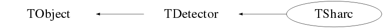

class TSharc: public TGRSIDetector
Function Members (Methods)
public:
| TSharc() | |
| TSharc(const TSharc& rhs) | |
| virtual | ~TSharc() |
| void | TObject::AbstractMethod(const char* method) const |
| void | TGRSIDetector::AddHit(TGRSIDetectorHit* hit, Option_t* opt = "") |
| virtual void | TObject::AppendPad(Option_t* option = "") |
| virtual void | TObject::Browse(TBrowser* b) |
| virtual void | BuildHits(TDetectorData* sd = 0, Option_t* = "") |
| static TClass* | Class() |
| virtual const char* | TObject::ClassName() const |
| virtual void | Clear(Option_t* = "") |
| virtual TObject* | TObject::Clone(const char* newname = "") const |
| virtual Int_t | TObject::Compare(const TObject* obj) const |
| virtual void | Copy(TObject&) const |
| virtual void | TObject::Delete(Option_t* option = "")MENU |
| virtual Int_t | TObject::DistancetoPrimitive(Int_t px, Int_t py) |
| virtual void | TObject::Draw(Option_t* option = "") |
| virtual void | TObject::DrawClass() constMENU |
| virtual TObject* | TObject::DrawClone(Option_t* option = "") constMENU |
| virtual void | TObject::Dump() constMENU |
| virtual void | TObject::Error(const char* method, const char* msgfmt) const |
| virtual void | TObject::Execute(const char* method, const char* params, Int_t* error = 0) |
| virtual void | TObject::Execute(TMethod* method, TObjArray* params, Int_t* error = 0) |
| virtual void | TObject::ExecuteEvent(Int_t event, Int_t px, Int_t py) |
| virtual void | TObject::Fatal(const char* method, const char* msgfmt) const |
| virtual void | FillData(TFragment*, TChannel*, MNEMONIC*) |
| virtual TObject* | TObject::FindObject(const char* name) const |
| virtual TObject* | TObject::FindObject(const TObject* obj) const |
| virtual Option_t* | TObject::GetDrawOption() const |
| static Long_t | TObject::GetDtorOnly() |
| TGRSIDetectorHit* | GetHit(const int& i) |
| virtual const char* | TObject::GetIconName() const |
| Short_t | GetMultiplicity() const |
| virtual const char* | TObject::GetName() const |
| virtual char* | TObject::GetObjectInfo(Int_t px, Int_t py) const |
| static Bool_t | TObject::GetObjectStat() |
| static TVector3 | GetOffset() |
| virtual Option_t* | TObject::GetOption() const |
| static TVector3 | GetPosition(int detector, int frontstrip, int backstrip, double X = 0.00, double Y = 0.00, double Z = 0.00) |
| TSharcHit* | GetSharcHit(const int& i) |
| int | GetSize() const |
| virtual const char* | TObject::GetTitle() const |
| virtual UInt_t | TObject::GetUniqueID() const |
| static double | GetXOffset() |
| static double | GetYOffset() |
| static double | GetZOffset() |
| virtual Bool_t | TObject::HandleTimer(TTimer* timer) |
| virtual ULong_t | TObject::Hash() const |
| virtual void | TObject::Info(const char* method, const char* msgfmt) const |
| virtual Bool_t | TObject::InheritsFrom(const char* classname) const |
| virtual Bool_t | TObject::InheritsFrom(const TClass* cl) const |
| virtual void | TObject::Inspect() constMENU |
| void | TObject::InvertBit(UInt_t f) |
| virtual TClass* | IsA() const |
| virtual Bool_t | TObject::IsEqual(const TObject* obj) const |
| virtual Bool_t | TObject::IsFolder() const |
| Bool_t | TObject::IsOnHeap() const |
| virtual Bool_t | TObject::IsSortable() const |
| Bool_t | TObject::IsZombie() const |
| virtual void | TObject::ls(Option_t* option = "") const |
| void | TObject::MayNotUse(const char* method) const |
| virtual Bool_t | TObject::Notify() |
| void | TObject::Obsolete(const char* method, const char* asOfVers, const char* removedFromVers) const |
| static void | TObject::operator delete(void* ptr) |
| static void | TObject::operator delete(void* ptr, void* vp) |
| static void | TObject::operator delete[](void* ptr) |
| static void | TObject::operator delete[](void* ptr, void* vp) |
| void* | TObject::operator new(size_t sz) |
| void* | TObject::operator new(size_t sz, void* vp) |
| void* | TObject::operator new[](size_t sz) |
| void* | TObject::operator new[](size_t sz, void* vp) |
| TSharc& | operator=(const TSharc& rhs) |
| virtual void | TObject::Paint(Option_t* option = "") |
| virtual void | TObject::Pop() |
| virtual void | Print(Option_t* = "") const |
| virtual Int_t | TObject::Read(const char* name) |
| virtual void | TObject::RecursiveRemove(TObject* obj) |
| void | TObject::ResetBit(UInt_t f) |
| virtual void | TObject::SaveAs(const char* filename = "", Option_t* option = "") constMENU |
| virtual void | TObject::SavePrimitive(ostream& out, Option_t* option = "") |
| void | TObject::SetBit(UInt_t f) |
| void | TObject::SetBit(UInt_t f, Bool_t set) |
| virtual void | TObject::SetDrawOption(Option_t* option = "")MENU |
| static void | TObject::SetDtorOnly(void* obj) |
| static void | TObject::SetObjectStat(Bool_t stat) |
| virtual void | TObject::SetUniqueID(UInt_t uid) |
| static void | SetXYZOffset(const double x, const double y, const double z) |
| virtual void | ShowMembers(TMemberInspector&) |
| virtual void | Streamer(TBuffer&) |
| void | StreamerNVirtual(TBuffer& ClassDef_StreamerNVirtual_b) |
| virtual void | TObject::SysError(const char* method, const char* msgfmt) const |
| Bool_t | TObject::TestBit(UInt_t f) const |
| Int_t | TObject::TestBits(UInt_t f) const |
| virtual void | TObject::UseCurrentStyle() |
| virtual void | TObject::Warning(const char* method, const char* msgfmt) const |
| virtual Int_t | TObject::Write(const char* name = 0, Int_t option = 0, Int_t bufsize = 0) |
| virtual Int_t | TObject::Write(const char* name = 0, Int_t option = 0, Int_t bufsize = 0) const |
protected:
| virtual void | TObject::DoError(int level, const char* location, const char* fmt, va_list va) const |
| void | TObject::MakeZombie() |
| virtual void | PushBackHit(TGRSIDetectorHit* sharchit) |
private:
| int | CombineHits(TSharcHit*, TSharcHit*, int, int) |
| void | RemoveHits(vector<TSharcHit>*, set<int,less<int>,allocator<int> >*) |
Data Members
public:
| enum TObject::EStatusBits { | kCanDelete | |
| kMustCleanup | ||
| kObjInCanvas | ||
| kIsReferenced | ||
| kHasUUID | ||
| kCannotPick | ||
| kNoContextMenu | ||
| kInvalidObject | ||
| }; | ||
| enum TObject::[unnamed] { | kIsOnHeap | |
| kNotDeleted | ||
| kZombie | ||
| kBitMask | ||
| kSingleKey | ||
| kOverwrite | ||
| kWriteDelete | ||
| }; |
private:
| static double | Pdim | QQQ quadrant angular range (degrees) |
| static double | PminDQ | degrees |
| static double | PminUQ | degrees |
| static double | Rdim | Rmax-Rmin for all QQQs |
| static double | RminDQ | |
| static double | RminUQ | |
| static double | X_offset | ! |
| static double | Xdim | total X dimension of all boxes |
| static double | XposDB | |
| static double | XposUB | |
| static double | Y_offset | ! |
| static double | Ydim | total Y dimension of all boxes |
| static double | YminDB | |
| static double | YminUB | |
| static double | Z_offset | ! |
| static double | Zdim | total Z dimension of all boxes |
| static double | ZminDB | |
| static double | ZminUB | |
| static double | ZposDQ | |
| static double | ZposUQ | |
| TSharcData* | data | ! |
| static double | ringpitch | |
| static double | segmentpitch | angular pitch, degrees |
| vector<TSharcHit> | sharc_hits | |
| static double | stripBpitch | |
| static double | stripFpitch |
Class Charts



Function documentation
TSharc()
~TSharc()
void RemoveHits(vector<TSharcHit>* , set<int,less<int>,allocator<int> >* )
TVector3 GetPosition(int detector, int frontstrip, int backstrip, double X = 0.00, double Y = 0.00, double Z = 0.00)
TGRSIDetectorHit* GetHit(const int& i)
TSharcHit* GetSharcHit(const int& i)
void SetXYZOffset(const double x, const double y, const double z)
int CombineHits(TSharcHit* , TSharcHit* , int , int )